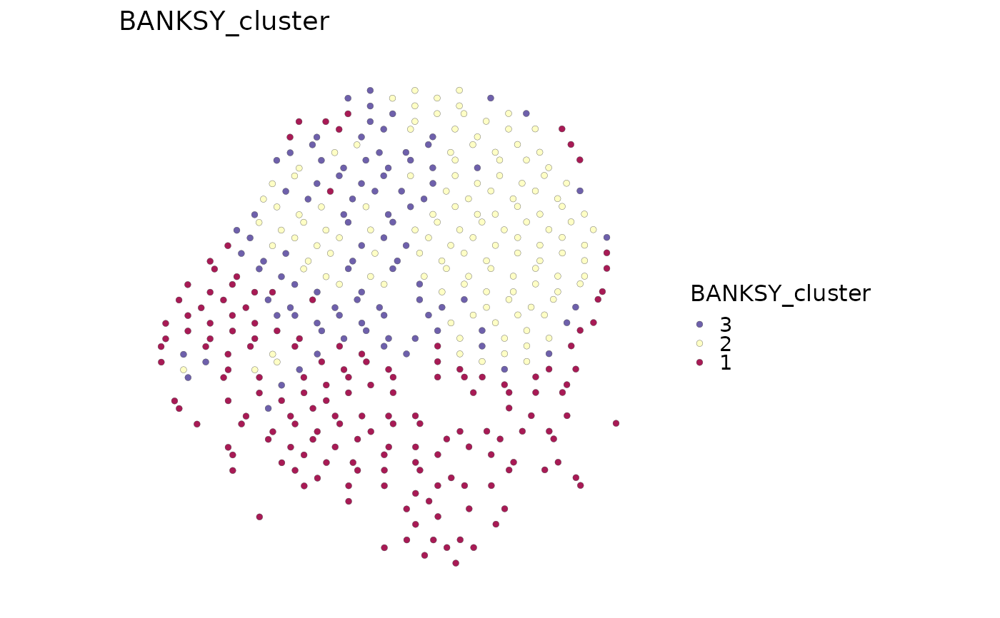

Build neighborhood-augmented BANKSY features from a spatial Seurat object
and store spatial domain or microenvironment clusters in metadata.
Usage
RunBANKSY(
object,
assay = NULL,
layer = "data",
features = NULL,
image = NULL,
coord.cols = c("col", "row"),
lambda = 0.2,
k_geom = 15,
M = 1,
npcs = 20,
use_agf = FALSE,
algo = "leiden",
k_neighbors = 50,
resolution = 0.6,
group = NULL,
seed = 1,
compute_banksy_params = list(),
run_pca_params = list(),
cluster_banksy_params = list(),
cluster_source = NULL,
cluster_colname = "BANKSY_cluster",
tool_name = "BANKSY",
store_results = TRUE,
verbose = TRUE,
coordinate_space = c("raw", "legacy_display"),
srt = NULL,
sample.by = NULL
)Arguments
- object
A
Seuratobject.- assay
Expression assay used by BANKSY. When
NULL, the assay linked to the selected image is used first, followed bySpatial,RNA, and the object's default assay.- layer
Assay layer used as BANKSY input.
- features
Optional features to use. If
NULL, all assay features are used after zero-count filtering.- image
Spatial image used to recover coordinates. A single available image is selected automatically; choose one explicitly when several exist, or provide a named sample-to-image map with
sample.by.- coord.cols
Metadata coordinate columns used when no image coordinate source is available. The default is resolved from common coordinate names.
- lambda
BANKSY spatial weighting parameter.
- k_geom
Unitless number of spatial neighbors used by BANKSY.
- M
Highest azimuthal Fourier harmonic passed to BANKSY.
- npcs
Number of principal components to compute.
- use_agf
Whether to use azimuthal Gabor filters.
- algo
Clustering algorithm passed to
Banksy::clusterBanksy().- k_neighbors
Number of neighbors for graph clustering.
- resolution
Graph clustering resolution.
- group
Optional metadata column passed to BANKSY for multi-sample scaling. It is an algorithm parameter and does not split sample fits.
- seed
Optional seed for PCA and clustering.
- compute_banksy_params
Additional parameters passed to
Banksy::computeBanksy().- run_pca_params
Additional parameters passed to
Banksy::runBanksyPCA().- cluster_banksy_params
Additional parameters passed to
Banksy::clusterBanksy().- cluster_source
Optional BANKSY
colDatacolumn to copy. IfNULL, the first cluster name reported byBanksy::clusterNames()is used when available.- cluster_colname
Metadata column used for BANKSY clusters.
- tool_name
Name used to store detailed results in
srt@tools.- store_results
Whether to store detailed BANKSY results in
object@tools; cluster assignments are still written to metadata whenFALSE; a lightweight index retains the result column and analyzed cells.- verbose
Whether to print the message. Default is
TRUE.- coordinate_space
Coordinate space used for BANKSY spatial input. The default is raw acquisition coordinates, so geometry and distance weighting use raw coordinate units. Use
"legacy_display"explicitly to reproduce the display-scaled coordinates used before scop 0.9.0.- srt
Deprecated alias for
object; supply exactly one of the two. It will be removed in scop 1.0.0.- sample.by
Optional metadata column for independent per-sample fits. Combined labels are prefixed with the sample name; domains are not aligned across samples.
Value
A Seurat object with BANKSY clusters in metadata. When
store_results = TRUE, detailed results are stored in
srt@tools[[tool_name]]; when FALSE, clusters remain in metadata and only
their lightweight retrieval index is retained in the tool entry. Both modes
also retain one private metadata identity column per result, allowing
GetSpatialResult() to follow subsets and renamed cells. Preserve this
column; its name is recorded in result_index$cell_id_colname.
Examples
Restored example output generated on 2026-09-21 from SCOP 06d363dad. These historical examples have not been revalidated against the current release. Current usage and arguments are documented above.
data(visium_human_pancreas_sub)
keep_spots <- unique(round(seq(1, ncol(visium_human_pancreas_sub), length.out = 400)))
spatial <- visium_human_pancreas_sub[, keep_spots]
spatial <- RunBANKSY(
spatial,
assay = "Spatial",
layer = "counts",
coord.cols = c("x", "y"),
features = rownames(spatial)[1:200],
lambda = 0.2,
k_geom = 8,
resolution = 0.6,
verbose = FALSE
)
#> Computing neighbors...
#> Spatial mode is kNN_median
#> Parameters: k_geom=8
#> Done
#> Computing neighbors...
#> Spatial mode is kNN_median
#> Parameters: k_geom=8
#> Done
#> Done
#> Centering
#> Done
#> Using seed=1
#> Using seed=1
SpatialSpotPlot(
spatial,
group.by = "BANKSY_cluster",
overlay_image = FALSE,
coord.cols = c("x", "y"),
pt.size = 1.5
)
